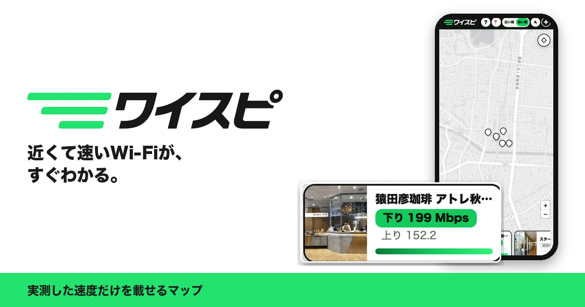
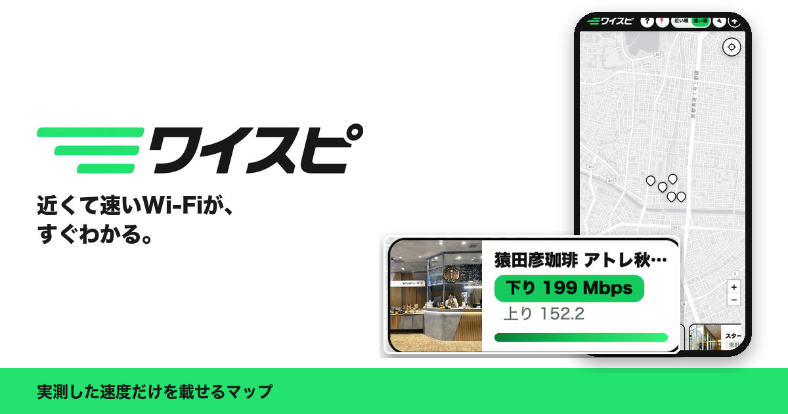
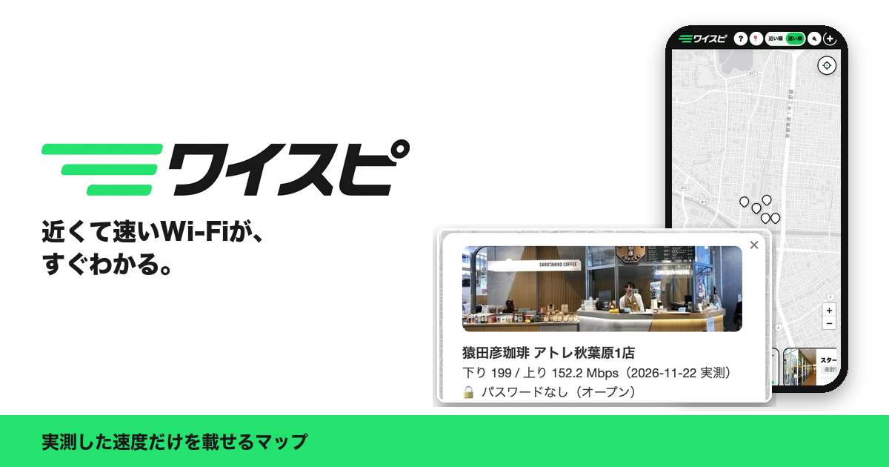
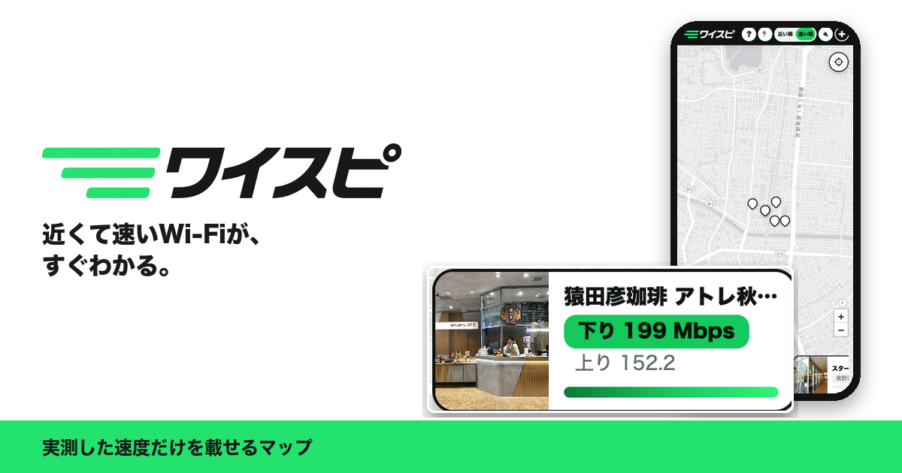

1速度カード拡大

ロゴ高さ：80px ／ コピー高さ：80px（一致）
ロゴ 524×80px。寄った地図のスマホ＋実測カードの拡大パネル（412px幅）。前回案5の標準磨き。
ロゴ 524×80px。寄った地図のスマホ＋実測カードの拡大パネル（412px幅）。前回案5の標準磨き。
2ポップアップ画面＋カード

ロゴ高さ：83px ／ コピー高さ：83px（一致）
ロゴ 543×83px。スマホの中身がポップアップ表示中の画面（店名と速度テキスト入り）＋実測カードの拡大パネル。
ロゴ 543×83px。スマホの中身がポップアップ表示中の画面（店名と速度テキスト入り）＋実測カードの拡大パネル。
3スマホ特大・寄り

ロゴ高さ：76px ／ コピー高さ：76px（一致）
ロゴ 497×76px。スマホも拡大パネルも大きめ（パネル452px幅）で、いちばん「寄った」印象。
ロゴ 497×76px。スマホも拡大パネルも大きめ（パネル452px幅）で、いちばん「寄った」印象。
4ポップアップ拡大パネル

ロゴ高さ：76px ／ コピー高さ：76px（一致）
ロゴ 497×76px。拡大パネルはポップアップそのもの（写真・店名・下り199／上り152.2 Mbps・実測日つき）。
ロゴ 497×76px。拡大パネルはポップアップそのもの（写真・店名・下り199／上り152.2 Mbps・実測日つき）。
5カード特大

ロゴ高さ：73px ／ コピー高さ：73px（一致）
ロゴ 478×73px。実測カードの拡大パネルを全案最大（488px幅）にし、速度バッジと速度バーを主役にした案。
ロゴ 478×73px。実測カードの拡大パネルを全案最大（488px幅）にし、速度バッジと速度バーを主役にした案。